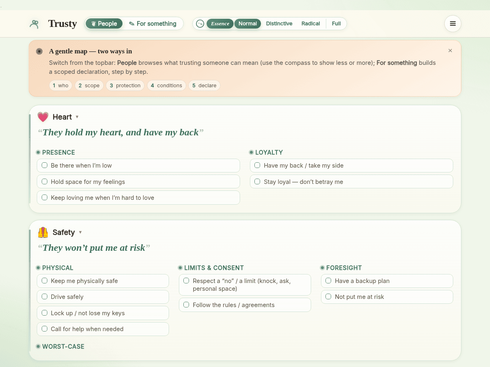
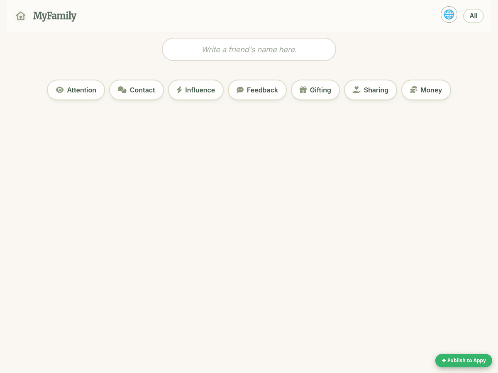
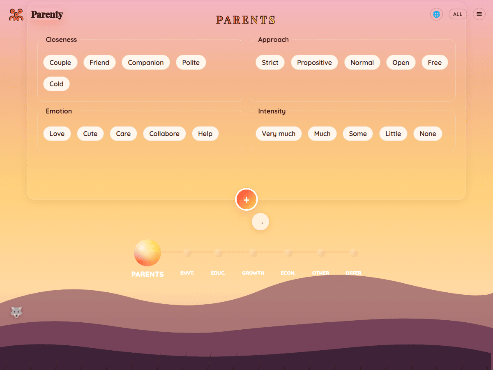
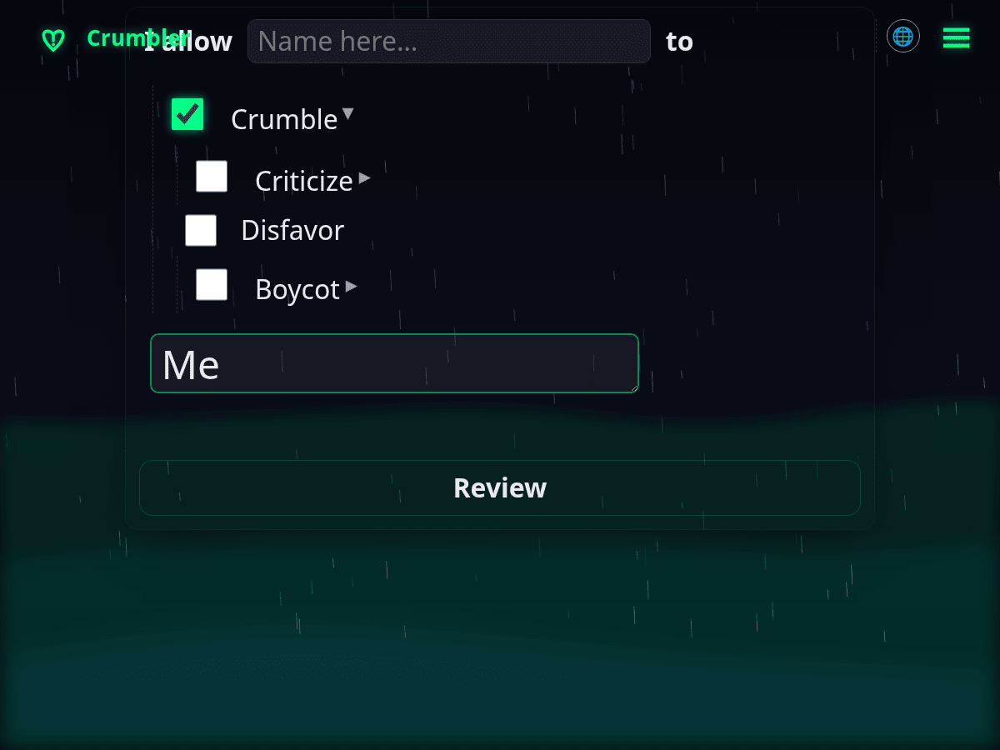
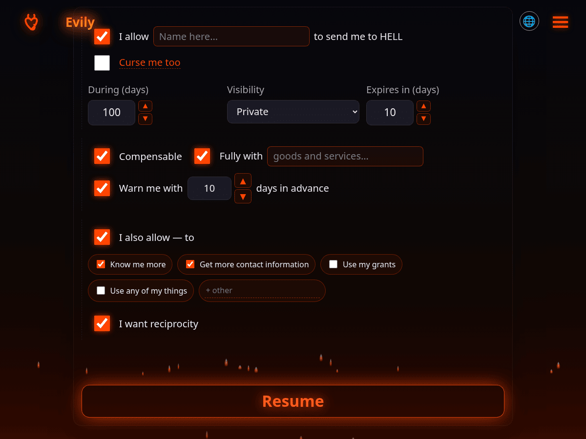
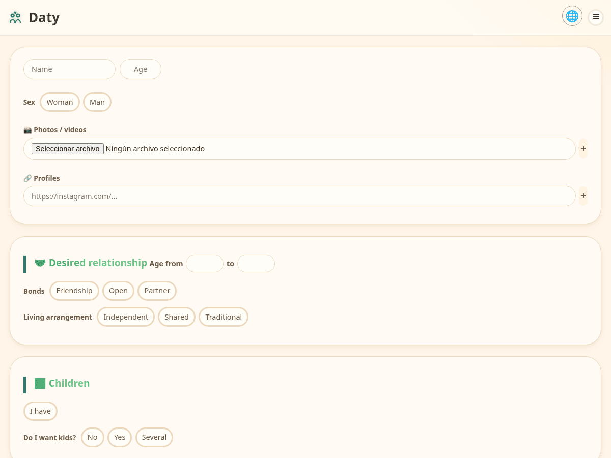
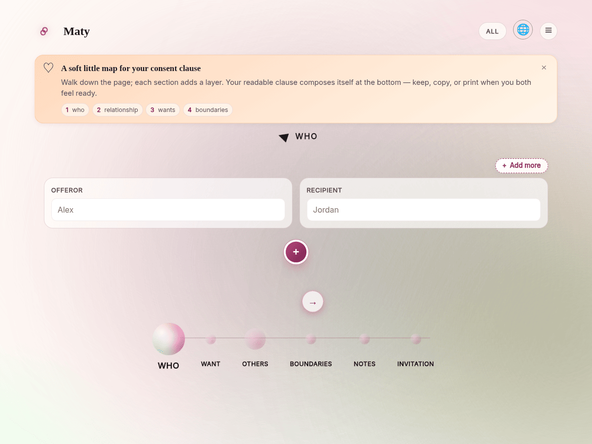

DarkSquare
DarkSquare — ordered psychopathologies.
flove field page · subsections, paradigms and their apps.
From psyche to polis.
DarkSquare — ordered psychopathologies.
The social fabric.
Freedom — no value is more complex than wisdom.
The channel and the message.
Art — the bond made form.
The law of the polis.
FreeData — decentralizing develops things from the bottom up.
Apps

TrustyExplicit trust.Preview →
MyFamilyFamily trust map.Preview →
ParentyCollaborative parenting.Preview →
CrumblyBreak it down to understand.Preview →
EvilyThe dark side of code.Preview →
DatyDating with a heart: no performance.Preview →
MatyConsent and preferences between two.Preview →How we govern together.
ProportionalGov — losers govern secondary resources.
Organised force.
LowAI — low-tech principles applied to AI.
CoComputing — computing shared between people and machines.
Apps
The pivot — where everything converges.
Original — return to the origin to understand the present.